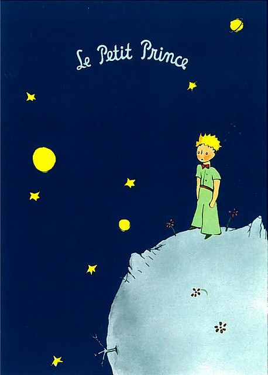

| The little Prince |
| [The Little Prince] was published in 1943 by French flight pilot-turned-novelist Antoine de Saint-Exupéry. It is a story that takes place when the main character who crashed into the desert due to a malfunction of an airplane meets a little prince on a space trip from a star, and it is a fairy tale for adults who symbolically express the process of humans overcoming solitude through the little prince. English and Korean were used as a stand-in and the original original was included. |
|  |